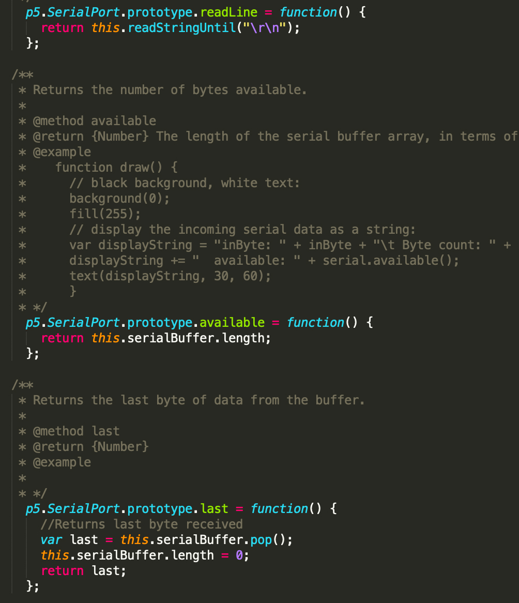

Assignment 6: Datalogging

Here is the output of the potentiometer on a webpage!
Circuit

Here is the circuit with a potentiometer connected to pin A0, 5V, and ground! The potentiometer is a variable resistor with resistance reaching as high as 10k ohms.
Schematic

The schematic shows the potentiometer connected to pin A0, 5V, and ground!
Code
Here is the portion of code (sketch.js) that draws the graph of the resistance changes on the webpage.

Here is a portion of the p5.serialport.js code that allows the input from the Arduino to be read and transmitted to the webpage as an output graph. See the rest of the code below!
